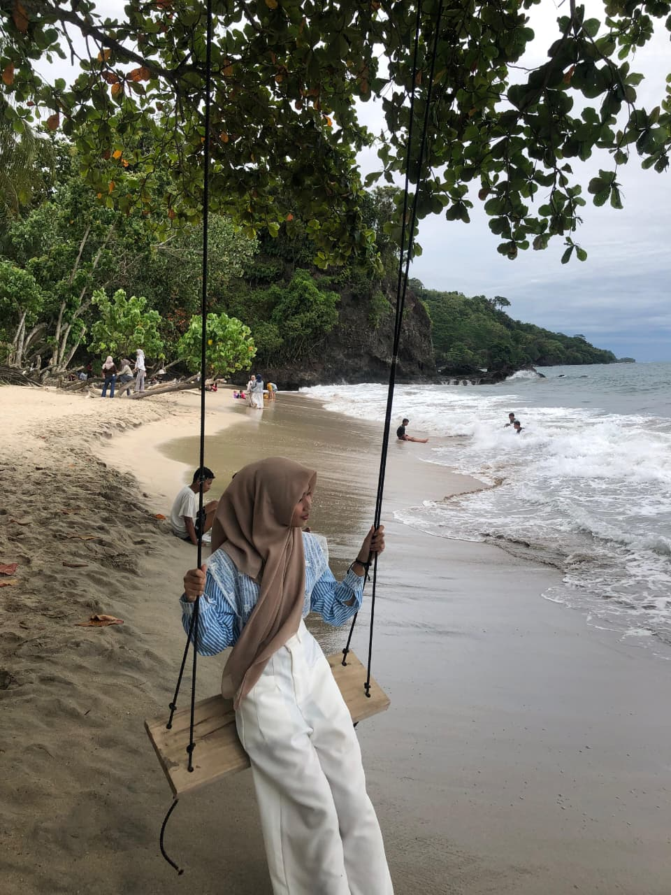
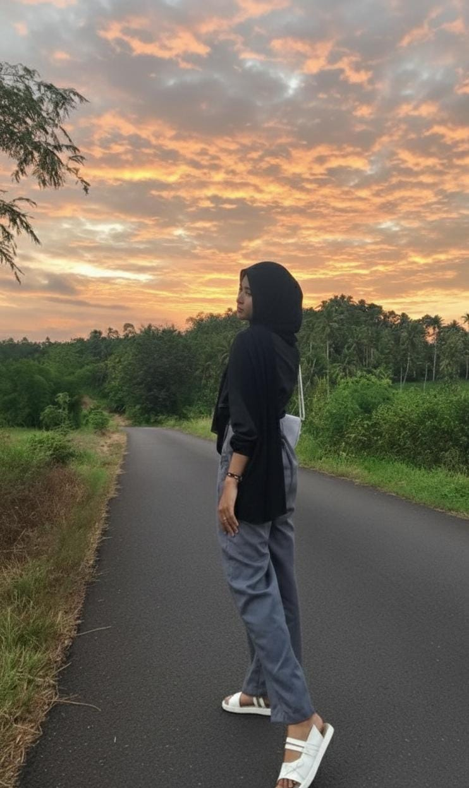
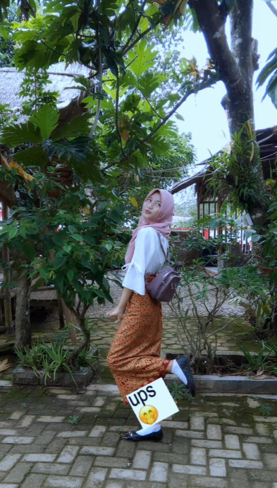
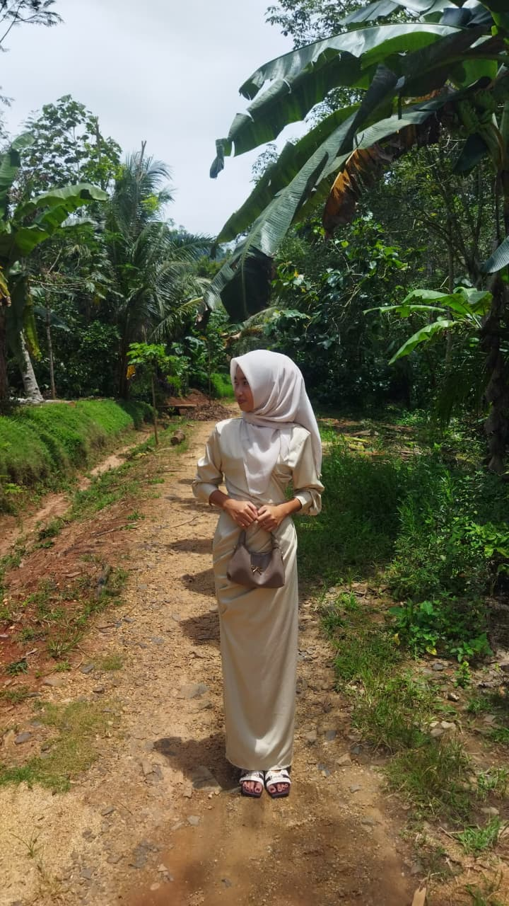
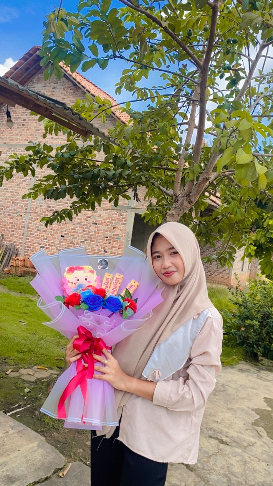

CHAPTER 01
Rani - The Girl I Love
“Kamu itu rumah paling tenang yang pernah aku punya.”
“Dan barangkali, rumah terbaik yang pernah kusinggahi.”
Rani's Memories Scattered On My Desk (Click to view)

Foto pertama Kamu.
Membahas Warna Rambutmu .

cantik yang spontan.

Fotomu dengan gaya yang lucu.
Apakah ini pap terakhir dalam hidupku.
Aku suka pap ini.
Senyum teduhmu.
Rambut dicepol.
Gemesnya kamu.
Filter favoritmu.

Fotomu sepulang idul fitri.

Hadiah Pertamaku.
"aku selalu menyukai caramu menatap mataku,
seolah semua luka di dunia ini tiba-tiba saja sembuh."
seolah semua luka di dunia ini tiba-tiba saja sembuh."
"dan mungkin itu kenapa aku jadi terlalu takut kehilanganmu."